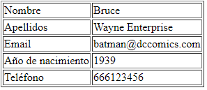
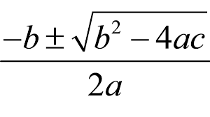

El llenguatge PHP¶
Duració i criteris d'avaluació
Duració estimada: 26 hores
| Resultat d'aprenentatge | Criteris d'avaluació |
|---|---|
| 2. Escriu sentències executables per un servidor Web reconeixent i aplicant procediments d'integració del codi en llenguatges de marques. | a) S'han reconegut els mecanismes de generació de pàgines Web a partir de llenguatges de marques amb codi embegut. b) S'han identificat les principals tecnologies associades. c) S'han utilitzat etiquetes per a la inclusió de codi en el llenguatge de marques. d) S'ha reconegut la sintaxi del llenguatge de programació que s'ha d'utilitzar. e) S'han escrit sentències simples i s'ha comprovat els seus efectes en el document resultant. f) S'han utilitzat directives per a modificar el comportament predeterminat. g) S'han utilitzat els diferents tipus de variables i operadors disponibles en el llenguatge. h) S'han identificat els àmbits d'utilització de les variables. |
| 3. Escriu blocs de sentències embeguts en llenguatges de marques, seleccionant i utilitzant les estructures de programació. | a) S'han utilitzat mecanismes de decisió en la creació de blocs de sentències. b) S'han utilitzat bucles i s'ha verificat el seu funcionament. c) S'han utilitzat «arrays» per a emmagatzemar i recuperar conjunts de dades. d) S'han creat i utilitzat funcions. e) S'han utilitzat formularis Web per a interactuar amb l'usuari del navegador Web. f) S'han emprat mètodes per a recuperar la informació introduïda en el formulari. g) S'han afegit comentaris al codi. |
PHP¶

- Acrònim de Personal Home Page
- Llenguatge de propòsit general, encara que el seu fort és el *desarollo web.
- Sintaxi similar a C / Java
- El codi s'executa en el servidor (en Apatxe mitjançant mod_php)
- El client rep el resultat generat després d'interpretar el codi en el servidor.
- El codi s'emmagatzema en arxiu amb extensió
.*php.
L'última versió és la 8.1, de Novembre de 2021.
La seua documentació és extensa i està traduïda: https://www.php.net/manual/es/.
Codi embegut¶
Els blocs de codi s'escriuen entre <?php y ?>, mentre que les sentències se separen mitjançant ;.
<!DOCTYPE html>
<html lang="es">
<head>
<meta charset="UTF-8">
<title>PHP fácil</title>
</head>
<body>
<!-- Muestra una frase con HTML -->
Hola mundo<br>
<!-- Muestra una frase con PHP -->
<?php echo "Es muy fácil programar en PHP."; ?>
</body>
</html>
Només etiquetes d'obertura
Si el nostre codi només contindrà codi PHP i res d'html, com per exemple, quan codifiquem classes o interfícies, només posarem l'etiqueta d'obertura, per a així indicar que és una arxiu de php pur.
Generant contingut¶
Tenim tres possibilitats a l'hora de generar contingut en els nostres documents PHP:
echoexpresión;print(expresión);<?=expresión ?>
Les que utilitzarem són echo quan ho fem dins d'un bloc d'instruccions i <?= quan només anem a mostrar el valor d'una variable dins d'un fragment HTML.
<!DOCTYPE html>
<html lang="es">
<head>
<meta charset="UTF-8">
<meta name="viewport" content="width=device-width, initial-scale=1.0">
<title>Echo y print</title>
</head>
<body>
<p><?php echo "Este texto se mostrará en la página web." ?></p>
<p><?= "Este texto se mostrará en la página web." ?></p>
<p><?php print("Este texto se mostrará en la página web.") ?></p>
</body>
</html>
Comentaris¶
Podem utilitzar comentaris d'una línia o de bloc:
<?php
// Este es un comentario de una sola línea
/*
Este es
un comentario
que ocupa
varias líneas
*/
?>
Errors¶
Si hi ha un error d'execució, es produeix un Fatal Error.
Fatal error: Uncaught Error: Call to undefined function plint() in C:\xampp\htdocs\202echo.php:11
Stack trace:
#0 {main}
thrown in C:\xampp\htdocs\202echo.php on line 11
Des de PHP 5 es llancen com una excepció. Més endavant veurem l'ús de try / catch.
Variables¶
- No és necessari declarar-les prèviament.
- Comencen per
$, per exemple$nom. Després del$, el següent caràcter ha de ser una lletra en minúscula (recomanació) o guió baix_. Després ja es poden posar números. - Són case sensitive:
$*var != $*vAR - No es declara el seu tipus, el tipat és dinàmic. S'assigna en temps d'execució depenent del valor assignat.
- Convenient inicialitzar-les, sinó donen error.
<?php
$nombre = "Aitor";
$nombreCompleto = "Aitor Medrano";
$numero = 123;
$numero2 = 456;
$pi = 3.14;
$suerte = true;
$sinValor;
echo $sinValor;
?>
Tipus
Encara que a priori no hi ha tipus de dades, internament PHP treballa amb quatre tipus escalars: boolean, integer, float i string i quatre tipus compostos: array, object, callable i iterable. Existeix un tipus especial per a null (més informació en http://php.net/manual/es/language.types.null.php).
Constants¶
Són variables el valor dels quals no varien. Existeixen dues possibilitats:
define(NOMBRE, valor);const NOMBRE; // PHP > 5.3
<?php
define("PI", 3.1416);
const IVA = 0.21;
echo PI, " ", IVA; // No se pone el símbolo dolar
?>
- Es declaren sempre en MAJÚSCULES
- Hi ha un conjunt de constants ja predefinides, també conegudes com magic constants: https://www.php.net/manual/es/language.constants.predefined.php
Operadors¶
Arimètics¶
| Exemple | Nom | Resultadt |
|---|---|---|
-$a |
Negació | Oposat de $a. |
$a + $b |
Suma | Suma de $a i $b. |
$a - $b |
Resta | Diferència de $a i $b. |
$a * $b |
Multiplicació | Producte de $a i $b. |
$a / $b |
Divisió | Cocient de $a i $b. |
$a % $b |
Mòdul / Resto | Resta de $a dividit per $b. |
$a ** $b |
Potència | Resultat de $a elevat a $b. |
En el cas de cadenes, si volem concatenar-les, s'utilitza l'operador .:
<?php
$x = 33;
$y = 11;
$z = $x + $y;
echo "La suma de 33 y 11 es ".44."<br />";
echo "La suma de ".$x." y ".$y." es ".(33 + 11)."<br />";
echo "La suma de ".$x." y ".$y." es ".$z."<br />";
?>
Realment, en comptes de concatenar cadenes amb variables, podem imprimir-les directament ja que s'expandeixen automàticament:
<?php
echo "La suma de $x y $y es $z <br />";
?>
A vegades, necessitem envoltar el nom de la variable entre claus per a poder unir més text al resultat:
<?php
$color = "rojo";
echo "El plural de $color el ${color}s";
?>
Més endavant estudiarem algunes funcions per al tractament de cadenes.
Comparació¶
| Exemple | Nom | Resultat |
|---|---|---|
$a == $b |
Igual | true si $a és igual a $b despres de la conversió de tipus. |
$a === $b |
Idèntic, Comparació estricta | true si $a és igual a $b, i són del mateix tipus de dades. |
$a != $b, $a <> $b |
Diferent | true si $a no és igual a $b despres de la conversió de tipus. |
$a !== $b |
No idèntic | true si $a no és igual a $b, o si no són del mateix tipus. |
$a < $b |
Menor que | true si $a és estrictament menor que $b. |
$a > $b |
Major que | true si $a és estrictamente major que $b. |
$a <= $b |
Menor o igual que | true si $a és menor o igual que $b. |
$a >= $b |
Major o igual que | true si $a és major o igual que $b. |
$a <=> $b |
Nau espacial | Torna -1, 0 o 1 cuando $a és respectivament menor, igual, o major que $b. |
$a ?? $b ?? $c |
Fussió de null | El primer operador d'esquerra a dreta que existisca i no siga null. null si no hi ha valors definits i no són null. PHP >= 7. |
Lògics¶
| Exemple | Nom | Resultat |
|---|---|---|
$a and $b, $a && $b |
And (i) | true si tant $a com $b sòn true. |
$a or $b, $a || $b |
Or (o inclusiva) | true si qualsevol de $a o $b són true. |
$a xor $b |
Xor (o exclusiva) | true si $a o $b són true, pero no ambdós. |
!$a |
Not (no) | true si $a no és true. |
Assignació¶
| Exemple | Nom | Resultat |
|---|---|---|
$a = $b |
Assignació | Assign a $a el valor de $b |
$a += $b |
Assignació de la suma | Li afegix a $a el valor de $b. Equivalent a $a = $a + $b |
$a -= $b |
Assignació de la resta | Li resta a $a el valor de $b. Equivalent a $a = $a - $b |
$a *= $b |
Assignació del producte | Assigna a $a el producte de $a per $b. Equivalent a $a = $a * $b |
$a /= $b |
Assignació de la divisió | Assigna a $a el concient de $a entre $b. Equivalent a $a = $a / $b |
$a %= $b |
Assignació de la resta | Assigna a $a la resta de dividir $a entre $b. Equivalent a $a = $a % $b |
$a .= $b |
Concatenació | Concatena a $a la cadena $b. Equivalent a $a = $a . $b |
$a++ |
Increment | Incrementa $a en una unitat. Equivalent a $a = $a + 1 |
$a-- |
Decrement | Decrementa $a en una unitat. Equivalent a $a = $a - 1 |
Prioritat dels operadors
Recorda la prioritat. Primer els parèntesis, després la negació (!), productes/divisions, sumes/restes, comparacions, lògics i finalment es realitza l'assignació.
Més informació en https://www.php.net/manual/es/language.operators.precedence.php
Autoavaluació
Si $a=5 i $b=4, esbrina el valor de $c si $c = $a*2 > $b+5 && !($b<>4)
Treballant amb formularis¶
Les dades s'envien via URL amb el format var1=valor1&var2=valor2…. Per exemple: exemple.php?nom=Bruce&cognom=Wayne
Es divideix en dos passos:
- Generar un formulari amb
action='arxiu.php' method='GET' - En l'arxiu
.phpllegir les dades amb$_GET['nombreVar']
Separarem sempre que podem el codi HTML del de PHP.
Per exemple, el formulari el col·loquem en saluda.html:
<form action="saluda.php" method="get">
<p><label for="nombre">Nombre: </label>
<input type="text" name="nombre" id="nombre"></p>
<p><label for="apellido1">Primer apellido:</label>
<input type="text" name="apellido1" id="apellido1"></p>
<p><input type="submit" value="enviar"></p>
</form>
I arrepleguem les dades en saluda.php:
<?php
$nombre = $_GET["nombre"];
$apellido1 = $_GET["apellido1"];
echo "Hola $nombre $apellido1";
?>
Si el volguérem realitzar tot en un únic arxiu (la qual cosa no és recomanable), podem fer-ho així:
<form action="" method="get">
<p><label for="nombre">Nombre: </label>
<input type="text" name="nombre" id="nombre"></p>
<p><label for="apellido1">Primer apellido:</label>
<input type="text" name="apellido1" id="apellido1"></p>
<input type="submit" value="enviar">
</form>
<p>
<?php
if(isset($_GET['nombre'])) {
$nombre = $_GET["nombre"];
$apellido1 = $_GET["apellido1"];
echo "Hola $nombre $apellido1";
}
?>
</p>
El treball amb formularis l'estudiarem en profunditat en la unitat 4, i veurem que a més de *GET, podem enviar les dades amb POST.
Condicions¶
La condició simple es realitza mitjançant la instrucció if. Entre parèntesi es posa la condició que es avalua a true o false. Si no es posen claus, en comptes d'obrir un bloc, s'executarà només la següent instrucció.
Sempre claus
És recomanable posar claus sempre encara que en el moment de codificar només hi haja una única instrucció. D'aquesta manera, es queda preparat per a afegir més contingut en el futur sense provocar bugs.
<?php
$hora = 8; // La hora en formato de 24 horas
if ($hora === 8) {
echo "Suena el despertador.";
}
echo "<br>";
if ($hora === 8)
echo "Suena el despertador.";
?>
Les condicions compostes mitjançant if-else:
<?php
$hora = 17; // La hora en formato de 24 horas
if ($hora <= 12) {
echo "Son las " . $hora . " de la mañana";
} else {
echo "Son las " . ($hora - 12) . " de la tarde";
}
?>
Les condicions niades mitjançant if-else if-else:
<?php
$hora = 14; // La hora en formato de 24 horas
if ($hora === 8) {
echo "Es la hora de desayunar.";
} else if ($hora === 14) {
echo "Es la hora de la comida.";
} else if ($hora === 21) {
echo "Es la hora de la cena.";
} else {
echo "Ahora no toca comer.";
}
?>
La sentència switch també permet treballar amb condicions múltiples:
<?php
$hora = 14; // La hora en formato de 24 horas
switch ($hora) {
case 9:
echo "Es la hora de desayunar.";
break;
case 14:
echo "Es la hora de la comida.";
break;
case 21:
echo "Es la hora de la cena.";
break;
default:
echo "Ahora no toca comer";
}
?>
No oblides el break
Un error molt comú és oblidar la instrucció break després de cada cas. Si no ho posem, executarà el següent cas automàticament.
Finalment, també tenim l'operador ternari condició ? valorTrue : valorFalse
<?php
$hora = 14;
$formato = ($hora > 12) ? 24 : 12;
echo "El formato es de $formato horas"
?>
Si volem comprovar si una variable té valor i si no donar-li un valor determinat, usarem l'operador ?: (es coneix com l'operador Elvis - https://en.wikipedia.org/wiki/Elvis_operator) amb la sintaxi expressió ?: valorSiVacio:
<?php
$nombre = $_GET['nombre'] ?: "desconocido"
?>
Bucles¶
Mitjançant la instrucció while:
<?php
$i = 1;
while ($i <= 10) {
echo "Línea " . $i;
echo "<br>";
$i++;
}
?>
Mitjançant la instrucció do-while:
<?php
do {
$dado = rand(1, 6);
// rand() devuelve un valor aleatorio
echo "Tirando el dado... ";
echo "ha salido un " . $dado . ".";
echo "<br>";
} while ($dado != 5);
echo "¡Bien! Saco una ficha de casa.";
?>
Mitjançant la instrucció for:
<?php
// Bucle ascendente
for ($i = 1; $i <= 10; $i++) {
echo "Línea " . $i;
echo "<br>";
}
// Bucle descendente
for ($i = 10; $i >= 0; $i--) {
echo "Línea " . $i;
echo "<br>";
}
?>
Més endavant estudiarem el bucle foreach per a recórrer arrays.
PHP, de la mateixa manera que Java i C, permet trencar els bucles mitjançant la instrucció break.
Al seu torn, continue permet saltar a la següent iteració.
Si pots, evita break i continue
Personalment, no m'agrada el seu ús. Preferisc l'ús de variables flag per a controlar l'eixida dels bucles. Per exemple:
<?php
$salir = false;
for ($i = 1; $i <= 10 && !$salir; $i++) {
if ($i === 5) {
echo "Salgo cuando i=5";
$salir = true;
}
}
?>
Arrays¶
Per a emmagatzemar dades compostes, podem utilitzar tant arrays senzills com arrays associatius (similars a un mapa). En realitat tots els arrays són mapes ordenats compostos de parells clau-valor.
Compte amb mesclar tipus
Com el tipat és dinàmic, nostres arrays poden contenir dades de diferents tipus. No es recomana mesclar els tipus.
De la mateixa manera que Java, es defineixen mitjançant claudàtors, són 0-index, i es pot assignar un valor a un posició determinada:
<?php
$frutas = array("naranja", "pera", "manzana");
$frutas2 = ["naranja", "pera", "manzana"];
$frutas3 = [];
$frutas3[0] = "naranja";
$frutas3[1] = "pera";
$frutas3[] = "manzana"; // lo añade al final
Podem obtindre la grandària del array mitjançant la funció count(array). Per a recórrer el array farem ús d'un bucle for:
<?php
$tam = count($frutas); // tamaño del array
for ($i=0; $i<count($frutas); $i++) {
echo "Elemento $i: $frutas[$i] <br />";
}
Una altra manera de recórrer els arrays, fins i tot més elegant, és fer ús de foreach. La seua sintaxi és foreach (array as element):
<?php
// Mitjançant foreach no necessitem saber la grandària del array
foreach ($frutas as $fruta) {
echo "$fruta <br />";
}
Arrays associatius¶
Cada element és un parell clau-valor. En comptes d'accedir per la posició, el fem mitjançant una clau. Així doncs, per a cada clau s'emmagatzema un valor.
A l'hora de recórrer aquest tipus de arrays, mitjançant foreach separem cada element en una parella clau => valor:
<?php
$capitales = ["Italia" => "Roma",
"Francia" => "Paris",
"Portugal" => "Lisboa"];
$capitalFrancia = $capitales["Francia"]; // se accede al elemento por la clave, no la posición
$capitales["Alemania"] = "Berlín"; // añadimos un elemento
echo "La capital de Francia es $capitalFrancia <br />";
echo "La capital de Francia es {$capitales["Francia"]} <br />";
$capitales[] = "Madrid"; // se añade con la clave 0 !!! ¡¡¡No asignar valores sin clave!!!
foreach ($capitales as $valor) { // si recorremos un array asociativo, mostraremos los valores
echo "$valor <br />";
}
foreach ($capitales as $pais => $ciudad) { // separamos cada elemento en clave => valor
echo "$pais : $ciudad <br />";
}
Operacions¶
print_r($array): mostra el contingut de tot el$array. Si volem mostrar el contingut amb un format determinat, hem de recórrer el array ambforeach.var_dump($mixed): mostra el contingut de l'element rebut. Mostra més informació queprint_r.$elem = array_pop($array): elimina l'últim$elementarray_push($array, $elem): afig un$elemental final$booleà = in_array($elem, $array): esbrina si$elemestà en el$array
<?php
$frutas = ["naranja", "pera", "manzana"];
array_push($frutas, "piña");
print_r($frutas);
$ultFruta = array_pop($frutas);
if (in_array("piña", $frutas)) {
echo "<p>Queda piña</p>";
} else {
echo "<p>No queda piña</p>";
}
print_r($frutas);
Array
(
[0] => naranja
[1] => pera
[2] => manzana
[3] => piña
)
<p>No queda piña</p>
Array
(
[0] => naranja
[1] => pera
[2] => manzana
)
$claus = array_keys($array): retorna les claus del$arrayassociatiu$tam = count($array): retorna la grandària de$arraysort($array): ordena els elements del$arrayisset($array[element]): indica si existeix/té valor element dins del arrayunset($array[element]): elimina l'element del array (deixa un buit)
<?php
$capitales = array("Italia" => "Roma",
"Francia" => "Paris",
"Portugal" => "Lisboa");
$paises = array_keys($capitales);
print_r($paises);
sort($paises);
print_r($paises);
unset($capitales["Francia"]);
print_r($capitales);
Array
(
[0] => Italia
[1] => Francia
[2] => Portugal
)
Array
(
[0] => Francia
[1] => Italia
[2] => Portugal
)
Array
(
[Italia] => Roma
[Portugal] => Lisboa
)
En assignar un array a un altre es realitza una còpia. Compte amb aquesta operació que pot consumir molts recursos.
<?php
$nombres = ["Juan", "Ana", "Pedro", "Laura"];
$copia = $nombres;
sort($nombres);
print_r($nombres);
print_r($copia);
Array
(
[0] => Ana
[1] => Juan
[2] => Laura
[3] => Pedro
)
Array
(
[0] => Juan
[1] => Ana
[2] => Pedro
[3] => Laura
)
Existeixen moltíssimes més funcions per a treballar amb arrays. Pots consultar roda la informació en la documentació oficial.
Articles per a aprofundir en les operacions amb arrays
- Un article molt complet (en anglés) de Com treballar amb arrays en PHP de la manera correcta.
- Un altre article recomanable (en anglés) és Com ordenar arrays en PHP.
Arrays bidimensionales¶
Consisteix en un array de arrays, ja siguen arrays seqüencials o associatius. Pot haver-hi N dimensiones.
<?php
$persona["nombre"] = "Bruce Wayne";
$persona["telefonos"] = ["966 123 456", "636 636 636"]; // array de arrays ordinarios
$persona["profesion"] = ["dia" => "filántropo", "noche" => "caballero oscuro"]; // array de arrays asociativos
echo $persona['nombre']." por la noche trabaja de ".$persona['profesion']['noche'];
<?php
$menu1 = ["Plato1" => "Macarrones con queso", "Plato2" => "Pescado asado", "Bebida" => "Coca-Cola", "Postre" => "Helado de vainilla"];
$menu2 = ["Plato1" => "Sopa", "Plato2" => "Lomo con patatas", "Bebida" => "Agua", "Postre" => "Arroz con leche"];
$menus = [$menu1, $menu2]; // creamos un array a partir de arrays asociativos
foreach ($menus as $menudeldia) {
echo "Menú del día<br/>";
foreach ($menudeldia as $platos => $comida) {
echo "$platos: $comida <br/>";
}
}
// Per a accedir a un element concret es nien els claudàtors
$postre0 = $menus[0]["Postre"];
Encara que puga semblar una bona idea crear aquest tipus d'estructures, és millor utilitzar objectes conjuntament amb arrays (possiblement arrays d'altres objectes) per a crear estructures complexes que permeten modelar millor els problemes.
Funcions¶
Al no declarar-se els tipus de dades, els paràmetres de les funcions no tenen tipus ni s'indica el tipus de dada que retornen. El pas de paràmetres es realitza per valor, és a dir, es realitza una còpia de la variable.
<?php
function nombreFuncion($par1, $par2, ...) {
// código
return $valor;
}
$resultado = nombreFuncion($arg1, $arg2, …);
?>
Per exemple:
<?php
function diaSemana() {
$semana = [ "lunes", "martes", "miércoles",
"jueves", "viernes", "sábado", "domingo" ];
$dia = $semana[rand(0, 6)];
return $dia;
}
$diaCine = diaSemana();
echo "El próximo $diaCine voy al cine.";
?>
Paràmetres per referència¶
Si volem passar un paràmetre per referència, en la declaració de la funció, indicarem els paràmetres mitjançant l'operador &* per a indicar la direcció de memòria de la variable.
<?php
function duplicarPorValor($argumento) {
$argumento = $argumento * 2;
echo "Dentro de la función: $argumento.<br>";
}
function duplicarPorReferencia(&$argumento) {
$argumento = $argumento * 2;
echo "Dentro de la función: $argumento.<br>";
}
$numero1 = 5;
echo "Antes de llamar: $numero1.<br>";
duplicarPorValor($numero1);
echo "Después de llamar: $numero1.<br>";
echo "<br>";
$numero2 = 7;
echo "Antes de llamar: $numero2.<br>";
duplicarPorReferencia($numero2);
echo "Después de llamar: $numero2.<br>";
?>
Paràmetres per defecte / opcionals¶
Permeten assignar valors en la declaració, i posteriorment, deixar l'argument en blanc.
<?php
function obtenerCapital($pais = "todos") {
$capitales = array("Italia" => "Roma",
"Francia" => "Paris",
"Portugal" => "Lisboa");
if ($pais == "todos") {
return array_values($capitales);
} else {
return $capitales[$pais];
}
}
print_r(obtenerCapital());
echo "<br/>";
echo obtenerCapital("Francia");
En el cas de conviure amb una altra mena de paràmetres, els paràmetres que tenen el valor assignat per defecte sempre es col·loquen al final.
<?php
function saluda($nombre, $prefijo = "Sr") {
echo "Hola ".$prefijo." ".$nombre;
}
saluda("Aitor", "Mr");
saluda("Aitor");
saluda("Marina", "Srta");
Paràmetres variables¶
Podem tindre funcions on en la declaració no indiquem la quantitat de dades d'entrada.
$arrayArgs = func_get_args();→ Obté un array amb els paràmetres$quantitat = func_num_args();→ Obté la quantitat de paràmetres rebuts$valor = func_get_arg(numArgumento);→ Obté el paràmetre que ocupa la posiciónumArgumento.
Aquestes funcions no es poden passar com a paràmetre a una altra funció (com a funcions variable, que veurem més endavant). Per a això, hem de guardar prèviament la funció en una variable.
<?php
function sumaParametros() {
if (func_num_args() == 0) {
return false;
} else {
$suma = 0;
for ($i = 0; $i < func_num_args(); $i++) {
$suma += func_get_arg($i);
}
return $suma;
}
}
echo sumaParametros(1, 5, 9); // 15
?>
Des de PHP 5.6, es pot utilitzar l'operador ... (variadics) el qual "disfressa" els paràmetres com un array:
<?php
function sumaParametrosMejor(...$numeros) {
if (count($numeros) == 0) {
return false;
} else {
$suma = 0;
foreach ($numeros as $num) {
$suma += $num;
}
return $suma;
}
}
echo sumaParametrosMejor(1, 5, 9); // 15
?>
Més usos de ...
També es pot utilitzar per a dividir un array en variables separades per a proporcionar arguments
<?php
function suma($a, $b) {
return $a + $b;
}
echo suma(...[1, 5])."<br />";
$a = [1, 5];
echo suma(...$a);
?>
Arguments amb nom¶
Des de PHP 8.0 podem passar els arguments amb el nom (a més de per posició, com hem fet fins ara). Els arguments amb nom es passen posant el nom com a prefix del paràmetres separat per dos punts: $resultat = funcion( arg1 : valor1, arg2 : valor2);
Aquesta característica complementa els parametros opcionals permitiendonos saltar el seu valor:
<?php
function funcionArgumentosNombre($a, $b = 2, $c = 4) {
echo "$a $b $c";
}
funcionArgumentosNombre(c: 3, a: 1); // "1 2 3"
Tant els paràmetres opcionals com els obligatoris poden tindre nom, però els arguments amb nom s'han de posar després dels que no ho tenen.
<?php
funcionArgumentosNombre(1, c: 3); // "1 2 3"
Funcions amb tipus¶
Des de PHP7 en les funcions, tant els paràmetre com la seua devolució, permeten la definició de tipus. Això es coneix com strict_types (tipificació estricta) i cal definir-ho en la primera línia de cada arxiu .php perquè el propi interprete PHP comprove els tipus i llance errors si els tipus són incorrectes, mitjançant la sentència
<?php
declare(strict_types=1);
Així doncs, definirem els tipus dels paràmetres i dels valors retornats mitjançant els tipus:
int, float, string, bool, object i array.
Si una funció no retorna res s'indica mitjançant el tipus void.
<?php
declare(strict_types=1);
function suma(int $a, int $b) : int {
return $a + $b;
}
$num = 33;
echo suma(10, 30);
echo suma(10, $num);
echo suma("10", 30); // error por tipificación estricta, sino daría 40
?>
Abast¶
Les variables definides fora de les funcions tenen abast global: accessibles des de qualsevol funció. Els paràmetres d'una funció i les variables declarades dins d'una funció (es coneixen com a variables locals) només són accessibles des de dins de la mateixa funció → aconseguisca de funció**.
En cas de conflicte, tenen prioritat les variables locals. Per a evitar el conflicte, dins de la funció, podem declarar la variable com a global.
<?php
function miCiudad() {
$ciudad = "Elche";
echo "Dentro de la función: $ciudad.<br>";
}
$ciudad = "Alicante";
echo "Antes de la función: $ciudad.<br>";
miCiudad();
echo "Después de la función: $ciudad.<br>"
?>
<?php
function miCiudad() {
global $ciudad;
$ciudad = "Elche";
echo "Dentro de la función: $ciudad.<br>";
}
$ciudad = "Alicante";
echo "Antes de llamar: $ciudad.<br>";
miCiudad();
echo "Después de llamar: $ciudad.<br>"
?>
No globals
Per favor, cal evitar l'ús de variables globals dins de les funcions. En el cas de necessitar-les, és millor passar-les com a paràmetre a les funcions.
Funcions variable¶
- Permet assignar una funció a una variable.
- Nom de la funció entre cometes.
- Si una variable va seguida de parèntesi, PHP buscarà una funció amb el seu valor.
<?php
$miFuncionSuma = "suma";
echo $miFuncionSuma(3,4); // invoca a la función suma
?>
Funcions anònimes
PHP permet la definició i ús de funcions anònimes, és a dir, funcions que no tenen nom, i s'utilitzen principalment per a gestionar els callbacks. Aquest tipus de funcions s'utilitza molt en JavaScript per a gestionar els esdeveniments i promeses.
<?php
$anonima = function() {
echo "Hola";
};
$anonima();
$anonimaConParametro = function($nombre) {
echo "Hola ".$nombre;
};
$anonimaConParametro("Aitor");
// Uso de variables externas a la función anónima --> `use`
$mensaje = "Hola";
$miClosure = function() use ($mensaje) {
echo $mensaje;
};
$miClosure();
// Uso de parámetros
$holaPHP = function($arg) use ($mensaje) {
echo $mensaje." ".$arg;
};
$holaPHP("PHP");
?>
Teniu més informació sobre funcions anònimes i fletxa en el següent article (en anglés): Funcions anònimes i fletxa en PHP
Biblioteca de funcions¶
Podem agrupar un conjunt de funcions en un arxiu, per a permetre la seua reutilització. Posteriorment, s'inclou amb:
include(arxiu);/include_once(arxiu);require(arxiu);/require_once(arxiu);
Si no troba l'arxiu, require llança un error fatal, include l'ignora
Les funcions _once només es carreguen una vegada, si ja ha sigut inclosa prèviament, no el torna a fer, evitant bucles.
Per exemple, col·loquem les funcions en l'arxiu biblioteca.php:
<?php
function suma(int $a, int $b) : int {
return $a + $b;
}
function resta(int $a, int $b) : int {
return $a - $b;
}
?>
I posteriorment en un altre arxiu:
<?php
include_once("biblioteca.php");
echo suma(10,20);
echo resta(40,20);
?>
Plantilles mitjançant include¶
Mitjançant l'ús de la instrucció include també podem separar fragments de codi PHP/HTML que vulguem reutilitzar en els nostres llocs web i crear un sistema molt senzill de plantilles. Per exemple, separarem una pàgina en tres parts, primer la part superior en encapçalat.php:
<!DOCTYPE html>
<html lang="es">
<head>
<meta charset="UTF-8">
<meta name="viewport" content="width=device-width, initial-scale=1.0">
<title><?= $titulo ?></title>
</head>
<body>
La part de baix, per exemple, només contindrà HTML i la col·loquem en peu.html:
<footer>Aitor Medrano</footer>
</body>
</html>
I després ens centrem únicament en el contingut que canvia en pagina.php:
<?php
$titulo = "Página con includes";
include("encapçalat.php");
?>
<h1><?= $titulo ?></h1>
<?php
include("peu.html");
?>
Funcions predefinides¶
El llenguatge ofereix un ventall de funcions ja definides, agrupades per la seua funcionalitat: https://www.php.net/manual/es/funcref.php
Cadenes¶
Ja hem vist que es poden crear amb cometes simples ('', sense interpretació) o cometes dobles ("", interpreten el contingut i les seqüències de fuita \n, \t, \$, {, … - *magic quotes)
<?php
"Me llamo $nombre"
"Son 30 {$moneda}s"
?>
S'accedeixen als caràcters com si fora un array.
<?php
$cadena = “Yo soy Batman”;
$ygriega = $cadena[0];
?>
A més de echo, podem mostrar les cadenes mitjançant la funció printf. Aquesta funció ve heretada del llenguatge C, i en la cadena s'indica el tipus de dada a formatar i genera una eixida formatada. Si vull guardar el resultat en una variable, podem utilitzar sprintf.
<?php
$num = 33;
$nombre = "Larry Bird";
printf("%s llevaba el número %d", $nombre, $num); // %d -> número decimal, %s -> string
$frase = sprintf("%s llevaba el número %d", $nombre, $num);
echo $frase
?>
Teniu molts més exemples en https://www.w3schools.com/php/func_string_printf.asp
Operacions bàsiques¶
Totes les funcions es poden consultar en https://www.php.net/manual/es/ref.strings.php
Les més importants són:
strlen: obté la longitud d'una cadena i retorna un nombre entersubstr: retorna una subcadena de la cadena originalstr_replau: reemplaça caràcters en una cadenastrtoloweristrtoupper: Transformen una cadena de caràcters en la mateixa cadena en minúscules o majúscules respectivament.
<?php
$cadena = "El caballero oscuro";
$tam = strlen($cadena);
echo "La longitud de '$cadena' es: $tam <br />";
$oscuro = substr($cadena, 13); // desde 13 al final
$caba = substr($cadena, 3, 4); // desde 3, 4 letras
$katman = str_replace("c", "k", $cadena);
echo "$oscuro $caba ahora es $katman";
echo "Grande ".strtoupper($cadena);
?>
Si volem treballar amb caràcters ASCII de manera individual, són útils les funcions:
chr: obté el caràcter a partir d'un ASCIIord: obté l'ASCII d'un caràcter
<?php
function despues(string $letra): string {
$asciiLetra = ord($letra);
return chr($asciiLetra + 1);
}
echo despues("B");
?>
Si volem netejar cadenes, tenim les funcions:
trim: elimina els espais al principi i al finalltrim/rtrimochop: Elimina els espais inicials / finals d'una cadena.str_pad: emplena la cadenes fins a una longitud especificada i amb el caràcter o caràcters especificats.
<?php
$cadena = " Programando en PHP ";
$limpia = trim($cadena); // "Programando en PHP"
$sucia = str_pad($limpia, 23, "."); // "Programando en PHP....."
?>
Comparant i buscant¶
La comparació de cadenes pot ser amb conversió de tipus mitjançant == o estricta amb ===.
També funcionen els operadors < i > si ambdues són cadenes.
En comparar cadenes amb valors numericos podem utilitzar:
strcmp: 0 iguals, <0 sia<bo >0 sia>bstrcasecmp: les passa a minúscules i comparastrncmp/strncasecmp: compara els N primers caràctersstrnatcmp: comparacions naturals
<?php
$frase1 = "Alfa";
$frase2 = "Alfa";
$frase3 = "Beta";
$frase4 = "Alfa5";
$frase5 = "Alfa10";
var_dump( $frase1 == $frase2 ); // true
var_dump( $frase1 === $frase2 ); // true
var_dump( strcmp($frase1, $frase2) ); // 0
var_dump( strncmp($frase1, $frase5, 3) ); // 0
var_dump( $frase2 < $frase3 ); // true
var_dump( strcmp($frase2, $frase3) ); // -1
var_dump( $frase4 < $frase5 ); // false
var_dump( strcmp($frase4, $frase5) ); // 4 → f4 > f5
var_dump( strnatcmp($frase4, $frase5) ); // -1 → f4 < f5
?>
Si el que volem és buscar dins d'una cadena, tenim:
strpos/strrpos: cerca en una cadena i retorna la posició de la primera/última ocurrència.strstr/strchr (àlies): cerca una cadena i retorna la subcadena a partir d'on l'ha trobadastristr: ignora les majúscules
<?php
$frase = "Quien busca encuentra, eso dicen, a veces";
$pos1 = strpos($frase, ","); // encuentra la primera coma
$pos2 = strrpos($frase, ","); // encuentra la última coma
$trasComa = strstr($frase, ","); // ", eso dicen, a veces"
?>
Si volem esbrinar que conté les cadenes, tenim un conojunto de funcions de comprovacions de tipus, es coneixen com les funcions ctype que retornen un booleà:
ctype_alpha→ lletresctype_alnum→ alfanumèricsctype_digit→ dígitsctype_punct→ caràcters de puntuació, sense espaisctype_space→ són espais, tabulador, salt de línia
<?php
$prueba1 = "hola";
$prueba2 = "hola33";
$prueba3 = "33";
$prueba4 = ",.()[]";
$prueba5 = " ,.()[]";
echo ctype_alpha($prueba1)."<br>"; // true
echo ctype_alnum($prueba2)."<br>"; // true
echo ctype_digit($prueba3)."<br>"; // true
echo ctype_punct($prueba4)."<br>"; // true
echo ctype_space($prueba5)."<br>"; // false
echo ctype_space($prueba5[0])."<br>"; // true
?>
Treballant amb subcadenes¶
Si volem trencar les cadenes en trossos, tenim:
explode: converteix en array la cadena mitjançant un separador.implode/join: passa un array a cadena amb un separadorstr_split/chunk_split: passa una cadena a una array/cadena cada X caràcters
<?php
$frase = "Quien busca encuentra, eso dicen, a veces";
$partes = explode(",", $frase);
$ciudades = ["Elche", "Aspe", "Alicante"];
$cadenaCiudades = implode(">", $ciudades);
$partes3cadena = chunk_split($frase, 3);
// Qui
// en
// bus
// ca
// ...
$partes3array = str_split($frase, 3);
// ["Qui", "en ", "bus", "ca ", "enc", …]
?>
Si volem treballar amb tokens:
strtok(cadena, separador)- i dins del bucle:
strtok(separador)
Finalment, per a separar-la sobre la base del format:
sscanf: a l'inrevés quesprintf, crea un array a partir de la cadena i el patró.
Finalment, altres operacions que podem realitzar per a treballar amb subcadenes són:
substr_count: nombre de vegades que apareix la subcadena dins de la cadenasubstr_replau: reemplaça part de la cadena a partir de la seua posició, i opcionalment, longitud
<?php
$batman = "Bruce Wayne es Batman";
$empresa = substr($batman, 6, 5); // Wayne
$bes = substr_count($batman, "B"); // 2
// Bruce Wayne es camarero
$camarero1 = substr_replace($batman, "camarero", 15);
$camarero2 = substr_replace($batman, "camarero", -6); // quita 6 desde el final
// Bruno es Batman
$bruno = substr_replace($batman, "Bruno", 0, 11);
?>
També disposem d'una sèrie de funcions que faciliten les codificacions des d'i cap a HTML:
htmlentities: converteix a entitats HTML, per exemple,áperￃﾡ,ñperￃﾱ,<per<, etc..htmlspecialchars: idem però només amb els caràcters especials (&,",',<,>, ...)striptags: elimina etiquetes HTML.nl2br: canvia salts de línia per<br />.rawurlencode/rawurldecode: codifica/descodifica una URL (espais, ...).
Aquestes funcions les utilitzarem en la unitat 4.- Programació Web.
Matemátiques¶
Disposem tant de constants com funcions ja definides per a treballar amb operacions matemàtiques: https://www.php.net/manual/es/ref.math.php
- Constants ja definides
M_PI,M_E,M_EULER,M_LN2,M_LOG2EPHP_INT_MAX,PHP_FLOAT_MAX
- Funciones de càlcul
pow,sqrt,log,decbin,bindec,decoct,dechex,base_convert,max,min
- Funcions trigonomètriques
sense,cos,tan,deg2rad,rad2deg
- Funcions per a treballar amb números aleatoris
rand,mt_rand(més ràpida)
Encara que la majoria d'elles són molt específiques de problemes matemàtics / estadístics, és molt comú que hàgem d'arredonir i/o formatar els càlculs abans de mostrar-los a l'usuari.
Mitjançant la funció number_format(numere, cantidadDecimales, separadorDecimales, separadorMiles) podermos passar números a cadena amb decimals i/o separadors de decimals i/o de milers.
<?php
$nf = 1234.5678;
echo number_format($nf, 2); // 1,234.57
echo number_format($nf, 2, "M", "#"); // 1#234M57
?>
Per a arredonir, tenim abs per al valor absolut i round per a arredonir, ceil per a aproximació per excés i floor per defecte.
<?php
$num = 7.7;
$siete = floor($num);
$ocho = ceil($num);
$otro = 4.49;
$cuatro = round($otro);
$cuatrocinco = round($otro, 1);
$cinco = round($cuatrocinco);
?>
Tipus de dades¶
Finalment, per a realitzar conversions de dades o si volem treballar amb tipus de dades, tenim les següents funcions:
floatval,intval,strval: retorna una variable de la mena de la funció indicadasettype: força la conversiógettype: obté el tipusis_int,is_float,is_string,is_array,is_object: retorna un booleà a partir del tipus rebut
<?php
$uno = 1;
var_dump(is_int($uno)); // true
$unofloat = floatval($uno);
settype($uno, "string");
var_dump(is_int($uno)); // false
var_dump(is_string($uno)); // true
settype($uno, "float");
var_dump(is_int($uno)); // false
var_dump(is_float($uno)); // true
var_dump(is_int(intval($uno))); // true
?>
Referències¶
- Manual de PHP
- PHP en 2020, por Jesús Amieiro
- Apunts de PHP de Bartolomé Sintes, profesor del IES Abastos de Valencia
- Guía de Estilo - PSR
- PHP - La manera correcta
Activitats¶
PHP bàsic¶
-
Visualitza el vídeo de Jesús Amieiro sobre PHP en 2020 a partir del minut 3.32 (són 40 minuts aproximadament).
- Quina relació existeix entre PHP i Facebook?
- Respecte al rendiment, quina versió mínima hauríem d'utilitzar?
- Per què PHP té mala fama?
-
201.php: tresfrases - Mostra 3 frases, cadascuna en un paràgraf utilitzant les tres possibilitats que existeixen de mostrar contingut. Després d'això, introdueix dos comentaris, un de bloc i un altre d'una línia. -
202.php: calculs -Escriu un programa que utilitze les variables$xi$i. Assigna'ls els valors166i999respectivament. A continuació, mostra per pantalla el valor de cada variable, la suma, la resta, la divisió i la multiplicació.  -
203.php: dadessPersonals -Escriu un programa que emmagatzeme en variables el teu nom, primer cognom, segon cognom, email, any de naixement i telèfon. Després mostra'ls per pantalla dins d'una taula. -
204.htmli204.php: dadesPersonals - És el mateix exercici que l'anterior, però separant la lògica. En el primer arxiu crearem el formulari per a introduir les dades, i després recollim les dades i generem la taula en el segon arxiu.
205.htmli205.php: madlib -A partir d'un nom, un verb, un adjectiu i un adverbi, crea una història que continga aquests elements. Per exemple:
- Entrada: gos / caminar / blau / ràpidament
- Eixida: T'agrada caminar amb el teu gos blau ràpidament ?
206.php: anys - Després de llegir l'edat d'una persona, mostrar l'edat que tindrà dins de 10 anys i fa 10 anys. A més, mostra quin any serà en cadascun dels casos. Finalment, mostra l'any de jubilació suposant que treballaràs fins als 67 anys. En aquest cas, no fa falta que prèviament crees un formulari, pots provar l'exercici via URL:206anyos.php?edat=33.
$anyoActual = date("Y");
-
207.php: dines -A partir d'una quantitat de diners, mostrar la seua descomposició en bitllets (500, 200, 100, 50, 20, 10, 5) i monedes (2, 1), perquè el nombre d'elements siga mínim. No s'ha d'utilitzar cap instrucció condicional. Per exemple, en introduir139ha de mostrar:1 bitllet de 100
0 bitllet de 50
1 bitllet de 20
1 bitllet de 10
1 bitllet de 5
2 moneda de 2
Pots forçar a realitzar la divisió sencera mitjançant la funció
intdiv($dividend, $divisor)o passar un número flotant a enter pots usar la funcióintval()
208.208.php: posnegzero - A partir d'un numero, mostra per pantalla si el número és positiu, negatiu o zero.
209.209.php: major3 -Sense fer ús de condicions amb operadors lògics, mostra el major de tres números (a, b i c).
-
210.php: nomEdat - A partir d'unaedatmostra per pantalla:bebési té menys de 3 anysxiquetsi té entre 3 i 12 anysadolescententre 13 i 17 anysadultentre 18 i 66jubilata partir de 67
-
211.php: rellotge - Escriu un programa que funcione similar a un rellotge, de manera que a partir dels valors dehora,minutisegonmostre l'hora dins d'un segon. Després de les23.59:59seran les0:0:0.

-
212.php: ecuacio2g - Crea un programa que resolga una equació de 2n grau del tipusax² + bx + c = 0. Tingues en compte que pot tindre 2, 1 o no tindre solució depenent del valor del discriminantb²-4ac.Per a calcular l'arrel quadrada hauràs d'utilitzar la funció
sqrt() -
index.php: index - Completa el fitxer index.php per enllaçar tots els exercicis
Exercicis d'investigació:
- Investiga perquè serveix l'operador nau espacial, disponible des de PHP7 (https://www.php.net/manual/es/migration70.new-features.php). Explica amb un parell de línies el seu propòsit i mitjançant codi demostra el seu ús.
- Investiga per a què serveix la instrucció
match(), disponible des de PHP8 (https://www.php.net/manual/es/control-structures.match.php). Explica amb un parell de línies el seu propòsit i mitjançant codi demostra el seu ús.
Bucles¶
-
Escriu un programa que mostre els nombres parells del 0 al 50 (dins d'una llista desordenada).
-
Escriu un programa que sume els números de l'1 al 10.
-
A partir d'una
baseiexponent, mitjançant l'acumulació de productes, calcula la potència utilitzant la instrucciófor. -
Mostra dins d'una taula HTML la taula de multiplicar del
nombreque reba com a paràmetre. Utilitza<thead>amb els seus respectius<th>i<tbody> per a dibuixar la taula. Per exemple:a * b = a*b 7 * 1 = 7 7 * 2 = 14 ... 7 * 10 = 70 -
224.html: Crea un formulari que permeta llegir unaquantitat.224.php: a partir de la quantitat, prepara un formulari amb tantes caixes de dades com el seu valor. Finalment a partir de les dades de totes les caixes de la pàgina anterior, suma'ls i mostra el total.Tip
Per a guardar una dada oculta pots utilitzar un camp de formulari de tipus ocult:
<input type="hidden" name="cantidad" value="33" /> -
225.htmli225.php: Apartir d'un nombre defilesicolumnes, crear una taula amb aqueixa grandària. Les cel·les han d'estar emplenades amb els valors de les coordenades de cada cel·la. -
226.htmli226.php: Basant-te en l'exercici anterior, emplena la taula de manera que només les vores tinguen contingut, quedant-se la resta de cel·les en blanc.
-
227.htmli227.php:Basant-te en l'exercici anterior, ara només ha d'aparéixer el contingut dels dues diagonals. -
228.php: Crea un programa que mostre per pantalla un quadrat exactament igual (fixa't bé en els encapçalats, tant de les files com de les columnes) al de la imatge amb les taules de multiplicar.
Arrays¶
-
230.php: Emplena un array amb 50 números aleatoris compresos entre el 0 i el 99, i després mostra-ho en una llista desordenada. Per a crear un número aleatori, utilitza la funciórand(inici, fi). Per exemple:$num = rand(0, 99) -
231.html: Prepara un formulari amb un caixa de text que realitze a una pregunta a l'usuari.231.php: A partir de l'anterior, crea un programa que mostre la pregunta rebuda i genere una resposta de manera aleatòria entre un conjunt de respostes predefinides, emmagatzemades en un array: Si, no, potser, clar que sí, per descomptat que no, no ho tinc clar, segur, jo diria que sí, ni de coña, etc..*. -
232.php: A partir de l'exercici 230, genera un array aleatori de 33 elements amb números compresos entre el 0 i 100 i calcula:- El major
- El menor
- La mitjana
-
233.php: Emplena un array de 100 elements de manera aleatòria amb valorsMoF(per exemple["M", "M", "F", "M", ...]). Una vegada completat, torna a recórrer-ho i calcula quants elements hi ha de cadascun dels valors emmagatzemant el resultat en un array associatiu['M' => 44, 'F' => 66](no utilitzes variables per a comptar lesMo lesF). Finalment, mostra el resultat per pantalla -
234.php: Torna a realitzar l'exercici 207, el de les monedes (500, 200, 100, 50, 20, 10, 5, 2, 1), però fent ús de arrays i un bucle. Emmagatzema el resultat en un array associatiu. Mostra el resultat en una llista desordenada únicament amb les quantitats que tenen algun valor. -
235.php: Mitjançant un array associatiu, emmagatzema el nom i l'alçada de 5 persones (nom => alçada). Posteriorment, recorre el array i mostra-ho en una taula HTML. Finalment afig una última fila a la taula amb l'altura mitjana. -
236.php: Mitjançant un array bidimensional, emmagatzema el nom, altura i email de 5 persones. Per a això, crea un array de persones, sent cada persona un array associatiu:[ ['nom'=>'Aitor', 'altura'=>182, 'email'=>'aitor@correo.com'],[…],… ]Posteriorment, recorre el array i mostra-ho en una taula HTML. -
237.htmli237.php: a partir d'un formulari amb un camp dequantitatde persones, generar un nou formulari per a llegir el nom, altura i email dequantitatpersones.237.php: A partir de les persones introduïdes, mostrar les seues dades en una taula, i posteriorment, destacar les dades del més alt i el del més baix. -
238.php: Emplena un array bidimensional de 6 files per 9 columnes amb números aleatoris compresos entre 100 i 999 (tots dos inclosos). Tots els números han de ser diferents, és a dir, no es pot repetir cap. Mostra a continuació per pantalla el contingut del array de tal forma que:- La columna del màxim ha d'aparéixer en blau.
- La fila del mínim ha d'aparéixer en verd
- La resta de números han d'aparéixer en negre.
Funcions¶
-
functions.php: Crea les següents funcions:- Una funció que esbrine si un número és parell:
esParell(int $num): bool - Una funció que retorne un array de grandària
$tamamb números aleatoris comprés entre$mini$max:arrayAleatori(int $tam, int $min, int $max) : array - Una funció que reba un
$arrayper referència i retorne la quantitat de nombres parells que hi ha emmagatzemats:countParells(array &$array): int
- Una funció que esbrine si un número és parell:
-
functions.php: Crea les següents funcions:- Una funció que retorne el major de tots els números rebuts com a paràmetres:
function major(): int. No pots usar la funciómax(). - Una funció que concatene tots els paràmetres rebuts separant-los amb un espai:
function concatenar(...$paraules) : string. Utilitza l'operador....
- Una funció que retorne el major de tots els números rebuts com a paràmetres:
-
functions.php: Afig les següents funcions:digits(int $num): int→ retorna la quantitat de dígits d'un número.digitN(int $num, int $post): int→ retorna el dígit que ocupa, començant per l'esquerra, la posició$post.llevaDarrere(int $num, int $cant): int→ li lleva per darrere (dreta)$cantdígits.llevaDavant(int $num, int $cant): int→ li lleva per davant (esquerra)$cantdígits.
Per a provar les funcions, fes ús tant de pas d'arguments posicionals com arguments amb nom.
-
functions.php: Crea una biblioteca amb dues funcions:- peseta2euros: passa de pessetes a euros
- euro2pesetes: passa d'euros a pessetes
Cada funció ha de rebre dos paràmetres:
- La quantitat a transformar
- La cotització, amb un paràmetre per defecte amb el factor de transformació.
243.php: utilitza per construir un formulari que faça la transformació en ambdos sentits. -
244.php: A partir d'una quantitat de productes, llegir el nom i cost de la quantitat de productes indicats (similar a l'exercici 237, però aquesta vegada no fa falta crear el formulari amb la quantitat, es rep mitjançant un paràmetre GET via URL).244.php: Després de llegir les dades del tiquet de compra, enumera en una taula els productes, amb el seu preu en euros i pessetes, i finalment, en una última fila, totalitzar en totes dues monedes. -
Simularem un formulari d'accés:
245.php: el formulari d'entrada, que sol·licita l'usuari i contrasenya.245.php: rep les dades i comprova si són correctes (els usuaris es guarden en un array associatiu en el fitxer247password.php).Utilitzainclude.245.php: L'usuari introduït és correcte245.php: L'usuari és incorrecte. Informar si tots dos estan mal o només la contrasenya. Tornar a mostrar el formulari d'accés.
Funcions predefinides¶
Tots els exercicis s'han de realitzar creant noves funcions per a encapsular el codi. A més de la pròpia funció, l'exercici ha de contindre codi per a poder provar-lo.
250fraseImpares.php: Lee una frase i retorna una nova amb solo els caràcters de les posicions imparelles.251vocales.php: A partir d'una frase, retorna la quantitat de cadascuna de les vocals, i el total d'elles.252analizador.php: A partir d'una frase amb paraules només separades per espais, retornar- Lletres totals i quantitat de paraules
- Una línia per cada paraula indicant la seua grandària
no es pot usar str_word_count
252analizadorWC.php: Investiga que fa la funció str_word_count, i torna a fer l'exercici.
253cani.php: EsCrIu UnA fUnCiÓ qUe TrAnSfOrMe UnA cAdEnA eN cAnI.254palindromo.php: Escriu una funció que retorne un booleà indicant si una paraula és palíndroma (es llig igual d'esquerra a dreta que de dreta a esquerra, per exemple, “lligar és ser agil”).255codificar.php: Utilitzant les funcions per a treballar amb caràcters, a partir d'una cadena i un desplaçament:- Si el desplaçament és 1, substitueix l'A per B, la B per C, etc.
- El desplaçament no pot ser negatiu
- Si s'ix de l'abecedari, ha de tornar a començar
- Cal respectar els espais, punts i comes.
256filtrado.html: Crea un programa que permeta a l'usuari llegir un conjunt de números separats per espais.256filtrado.php: El programa filtrarà els números llegits per a tornar a mostrar únicament els nombres parells i indicarà la quantitat existent.Dona'm números: 1 4 7 9 23 10 8 Els 3 nombres parells són: 4 10 8257investiga.php: Investiga les següents funcions de cadena (explica per a què serveixen mitjançant comentaris, i programa un xicotet exemple de cadascuna d'elles):ucwords,strrev,str_repeatimd5.
Els següents exercicis es basen en la generació de números aleatoris.
260generador.php: Crea una funció que permet generar una lletra aleatòria, majúscula o minúscula.261generaContrasenya.php: Crea una funció que a partir d'una grandària, genere una contrasenya aleatòria composta de lletres i dígits de manera aleatòria.262quinielas.php: Crea les següents funcions:quinigol() : array→ Genera un array multidimensional amb 6 resultats aleatoris amb combinacions[012M, 012M]travessa() : array→ Genera un array amb una combinació de travessa generada de manera aleatòria: 14 resultats amb1X2i el ple al quinze amb[012M, 012M]taula(array $travessa) : string→ transforma un array d'una quniela en una taula HTML